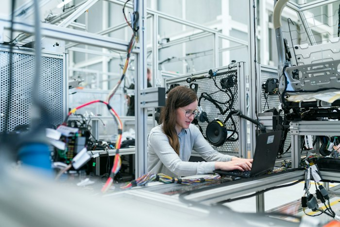
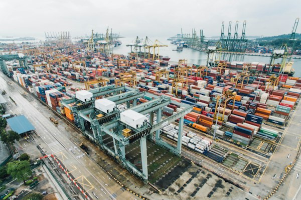

AI 驱动的定制化交付
全链路降本增效升级方案
面向宝信软件供应链软件事业部 ERP / MES / TMS 定制项目，打通“从现场调研到自动测试报告”全链路。凡是格式转换、扩写、绘图、编码、造数据、写报告，优先 AI；人只做判断、确认、兜底。


为什么传统定制项目周期长、成本高？
传统链条7大环节全部依赖人工串行传递，信息在口头、Word、Excel 间反复转抄损耗

调研重现场轻沉淀
顾问驻场 2~4 周，访谈靠手记，不同顾问结论打架。
设计文档严重断层
基本/详细设计靠 Word，业务语言与技术语言两张皮。
编码重复造轮子
主数据、单据流、审批流、接口在每个项目重写。
测试滞后与漏测
用例手写、回归靠人点，MES联调/TMS计费难覆盖。
行业知识不沉淀
钢铁/物流 Know-how 在个人脑中，新人6个月才上手。
图 1：ERP / MES / TMS 典型项目周期对比（传统 150 天 vs AI 约 49 天）
全链路 6 大阶段工作量横向对比，前后端开发从 60 天缩短至 22 天，测试联调从 25 天缩短至 8 天
宝信供应链 AI Copilot 实景仿真演示
点击下方 4 大典型场景选项卡，直观体验从“现场原始输入”到“AI 生成物 + 人工签字门禁”的真实界面
能用 AI 优化的全部清单（人审 + 机做）
图 2：12 环节 AI 渗透率评估（点击柱状图或下方卡片查看环节详情）
AI 承担 60% ~ 95% 的繁琐生成工作，每个高风险节点均保留人工终审签字门禁
五大业务新增长点与四层安全技术架构
跨 ERP/MES/TMS 的“订单-库存-在途-结算”统一视图，AI 实时做异常预警与改单建议。
钢铁 MES 报工、TMS 计费/调度沉淀为可配置标准模板，中小型项目 2~4 周极速交付。

融合 MES 设备数据 + AI 工业视觉质检，提供 Predictive Maintenance 预测性维护增值服务。
基于沉淀业务单据做需求预测、库存优化、安全库存建议，转向按年订阅收费模式。

内置多语言、多税制、国际单证合规一键切换能力，护航中国制造与物流企业全球化出海。
五、参考技术栈与四层系统架构（所有 AI 生成物经“人工门禁”进入下一层）
企业内网私有化大模型 + 向量库，确保核心钢铁/物流敏感数据不出域，全程审计留痕
成本效益交互测算与 90 天见效路线图
图 3：各环节成本对比（归一化）· 总体降本约 55~65%
蓝色代表 AI 优化后剩余成本占比（仅需原来的 20% ~ 40%）
七、分阶段落地路线（90 天见效闭环）
上线需求模板 + 调研助手 + 报告 Copilot，试点 1 个 TMS 项目
优先在中小规模 TMS 物流项目中跑通调研与报告自动生成闭环。
接入原型 / 代码 Agent 与架构生成器，沉淀首批行业组件
打通从用户故事到高保真原型、前后端脚手架代码生成，构建组件资产库。
全流水线自动化测试，建成 RAG 知识库，复盘推广到 ERP / MES
实现 Nightly 自动化回归测试，将成熟模式全面复制到钢铁 MES 与云 ERP 产线。